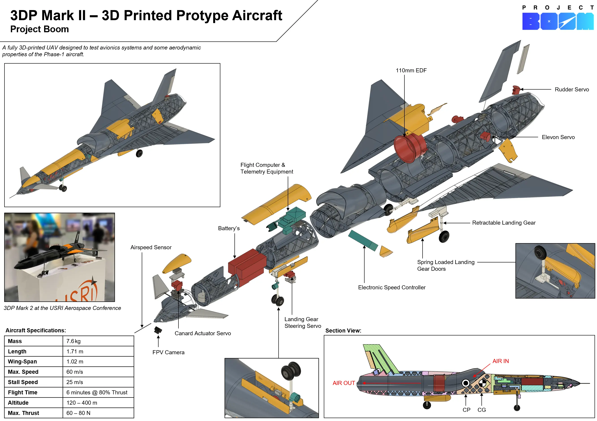
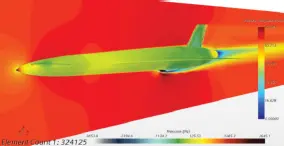
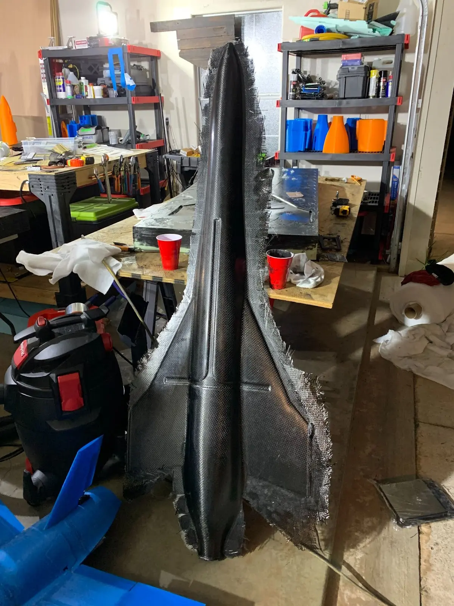
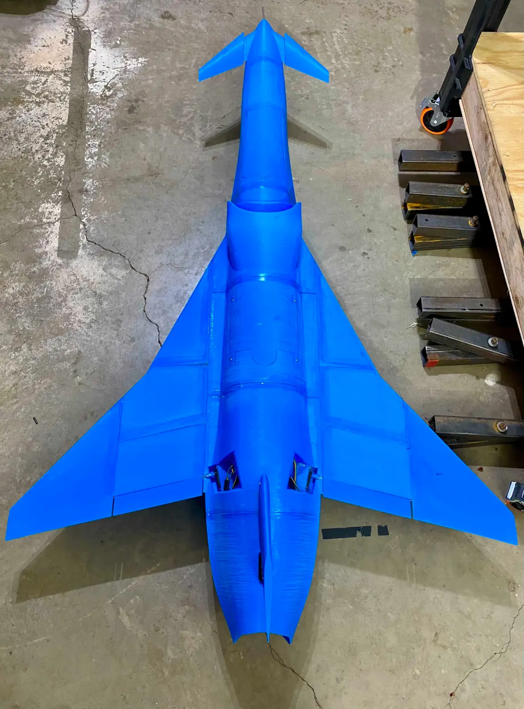

Project Boom is a student-led engineering team with the goal of designing and building the first student UAV to break the sound barrier. The team is composed of graduate and undergraduate students as well as industry advisors spanning twenty countries. Over the past year, we have completed our initial research and design phase, our full-scale 3D printed slow-flight prototype, and are now completing our carbon fiber, high-speed prototype for flight at the Nevada National Security Site.Project CAD Lead

Aerobody CAD Design:As the Payload Team Lead, I oversaw the research and development of our three initial payload candidates including the final nitinol design, a bistable, soft pneumatic actuator, and a central torsion spring deployment system. Having selected the nitinol design, I now lead the manufacturing of six prototypes to test varying properties of the nitinol wire and PCBs. This semester we will finalize the design and begin integration with the satellite bus.

Aerodynamic Optimization:Accurate payload deployment test and evaluation requires replicating a 0G environment like that of low Earth orbit. To this end I led the design and construction of a gravity-offloading test stand with low-friction hinges to accurately and quantifiably evaluate the performance of the nitinol. To maintain accurate independent variables, the stand includes integrated thermocouples to provide real-time data as to the temperature of the wire as it is actuated.

